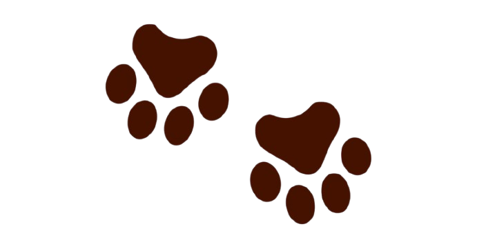
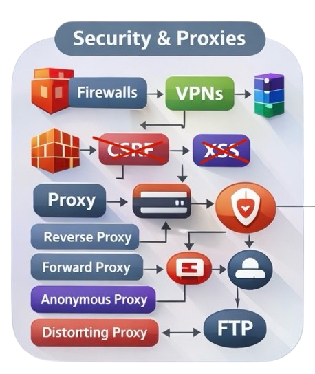
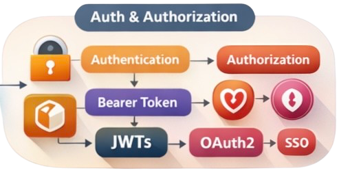
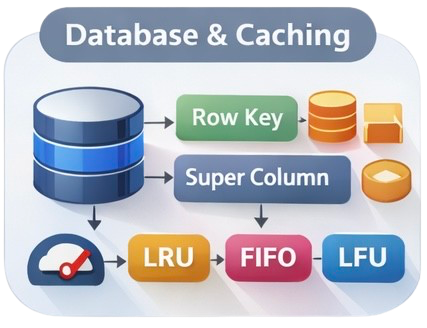
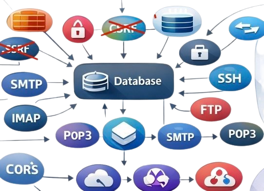
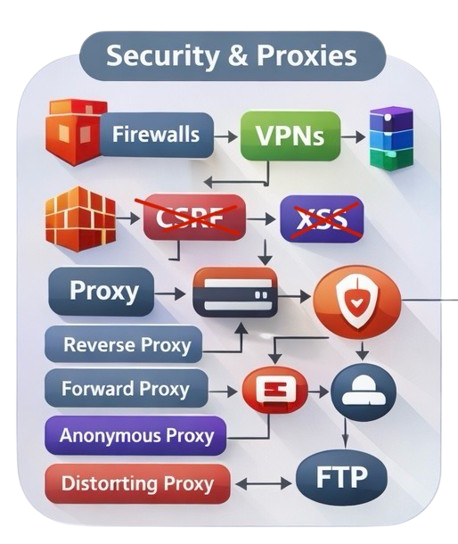
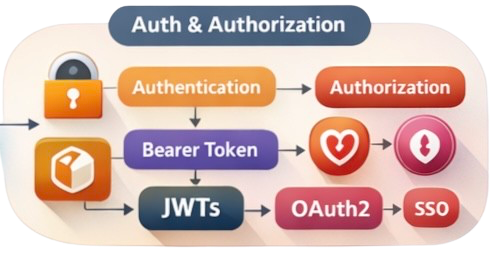
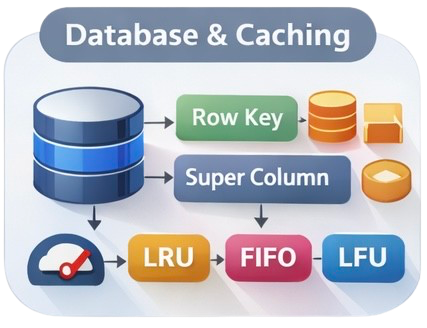
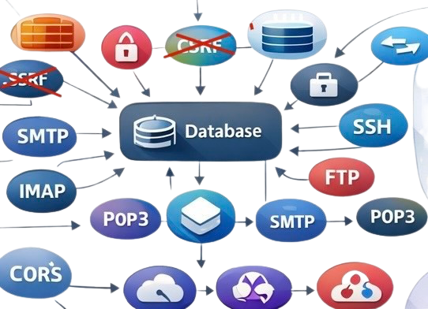

STEP INSIDE
Modern Networks. Intelligent Solutions.
 








About Me
My Story: My foundation in mechanical engineering fueled my curiosity in manufacturing and automation production lines, shaping how I understand systems at scale. I now work in software backend development and DevOps, while strengthening my expertise in network architecture and cybersecurity.
Philosophy: I translate client and team pain points into B2B products designed for real adoption. I actively explore market validation, penetration strategies, data analytics, and emerging technological white spaces to identify opportunities where technology can create defensible advantage.
Vision: With an Industrial Engineering background, I am learning to build collaborative software ventures that enable sustainable processes and resource efficiency, bridging technical depth with business insight.
Life Beyond Work: I maintain balance by discovering great places to eat, see, drink, and enjoy vibrant social experiences. Music is a passion, initially hip-hop and now techno, and I look forward to producing with my own MIDI setup. I also enjoy baking and experimenting with flavors in the kitchen.
Technology Stack
Spring Tool Suite
VS Code
PostgreSQL
Docker
AWS

Java